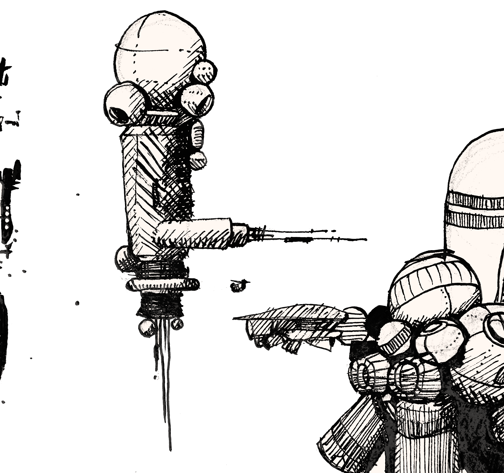
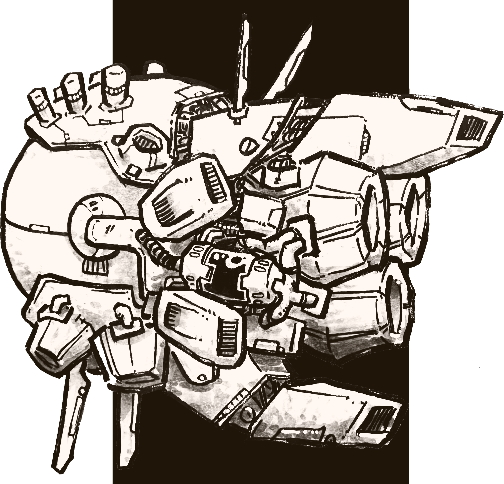
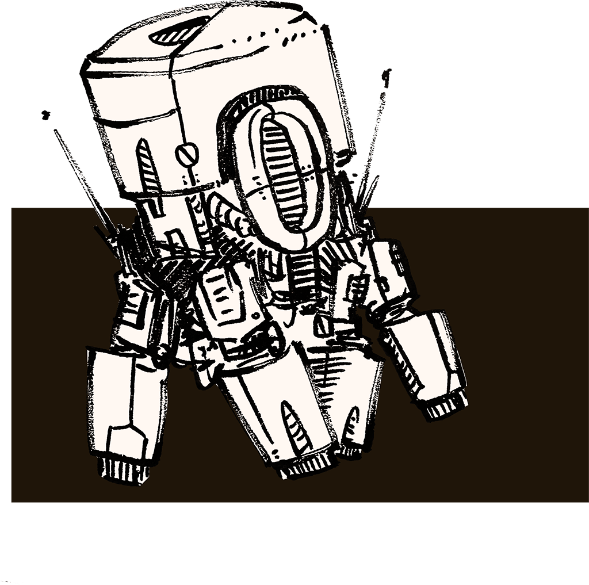

X. “old port”
Abandoned frontier encampment

Decommissioned station used by pioneers. It ran the first ever mission into the patch. Retrofitted with cheap chemical boosters, holds packed with able crews and scrap cutters, the first Free Spacers parked this thing deep in the patch. Once Spinward Yards were up and running, the Spacers stripped Old Port for all it was worth—Spacers aren't in the habit of wasting good tech.
The station, designated Alphabet Papa 616, is stripped to the studs. Crew compartments sit exposed to vacuum. Electrical and mechanical housings are empty, stripped even of wiring and insulating conduit. The station's bulk and skeletonized structure confound sensors, making it a popular spot for smugglers, radical union crews, and bounty hunters. Visiting ships land in one of two cavernous holds, plastered with graffiti letters and crew stickers.
d6—Who's here?
- Skittish salvage crew, they're six solar months behind on their union dues. Flying a sketchy looking cutter.
- Nosy bounty hunter with a slick net-connected helmet, it's got facial recognition and threat assessment. Pilots a little fighter with a nasty ECM and missile payload.
- Syndicate enforcers hiding out after a job. They've got killer's tattoos and a shuttle all shot up with small arms fire.
- Some real flighty scabs in a real shiny looking cutter, kitted out for some kind of CBRN job.
- Brainrot tech CEO camped out working on his new EDM track. Says this spot has great vibes. Flashy shuttle with the kind of pilot android that can handle flying the patch.
- Contract deputy out here to serve a warrant for criminal infringement of patent rights. On 2-in-1, it's for you.

d6—Locations
- Aft hold: preferred by union crews. Visitors leave ship callsigns in wax marker, hundreds cover the floor and walls.
- Fore hold: preferred by incognito crews. Sightlines broken up with a few wrecked shuttles and abandoned cargo containers.
- Engineering: everything was taken from this deck, a fat hole marks the spot where the reactor used to be.
- Bridge: the old flight control system is still here. A relic, running off magnetic tape and thumb size circuit components. Injection molded housing of brittle yellowed plastic.
- Crew levels: nothing remains. Exposed structural beams beneath an open roof to hard vacuum.
- Station exterior: pockmarked with dents from debris impacts, and holes where instruments and attitude thrusters have been stripped away.
d6—Details
- There was a firefight here lately. One side lost bad.
- Some graffiti reads “Reactor Boys Rule”
- Intact electronics spam sensors with alerts
- Piled garbage: emptied cans of processed meat and drained pouches of liquor
- This section of the station is starting to break apart, too many structural components have been scavenged.
- This area doesn't have any connectivity to SecNet
